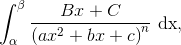
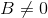
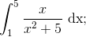
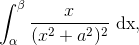
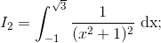
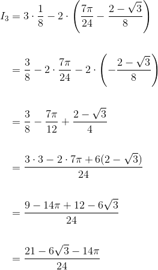
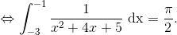
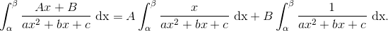
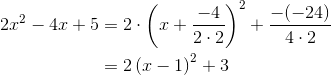
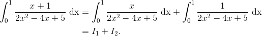

Calculul integralelor funcțiilor raționale simple. Tipuri de integrale
În paginile anterioare s-a realizat calculul unui număr suficient de integrale de funcții utilizând fie formula lui Leibniz - Newton, fie metoda de integrare prin părți, fie metoda schimbării de variabilă.
În ceea ce urmează ți se vor prezenta și alte tehnici de a calcula integralele unor funcții integrabile.
Pentru început, introducem următoarele definiții:
Fie intervalul de numere reale
Definiția CI40: Funcția rațională
Spunem că funcția ![f:\left [ a,b \right ]\rightarrow \mathbb{R}](../../media/webbooks/404/2699/images/equations/ltajijolysvl8pqjld6e2q==.gif) este o funcție rațională dacă există două funcții polinomiale
este o funcție rațională dacă există două funcții polinomiale  și astfel încât, pentru oricare
și astfel încât, pentru oricare  , avem și
, avem și
Definiția CI41: Funcția rațională simplă
O funcție rațională  se numește funcție rațională simplă dacă are una dintre formele:
se numește funcție rațională simplă dacă are una dintre formele:
- cu
Având introduse aceste definiții, putem începe în a-ți prezenta tehnici de calcul ale integralelor unor funcții raționale simple.
Calculul integralei unei funcții raționale simple
În acest paragraf ți se va detalia procedeul de calcul al integralei definite a unei funcții raționale simple de tipul I, tipul II sau timpul III din Definiția CI41: ( Funcția rațională simplă ).
- Integrale de forma cu funcție polinomială
Dacă funcția este o funcție polinomială de gradul  atunci, folosind formula lui Leibniz - Newton ( Teorema CI28: ( Formula lui Leibniz - Newton ) ), se obține:
atunci, folosind formula lui Leibniz - Newton ( Teorema CI28: ( Formula lui Leibniz - Newton ) ), se obține:
Exemplu:
![\begin{align*}& \int_{-2}^{1} \left ( 8x^3-9x^2+10x-7 \right )\mathrm{dx}=\\\\&=\left ( 8\cdot \frac{x^4}{4}-9\cdot \frac{x^3}{3}+10\cdot \frac{x^2}{2}-7\cdot x \right )\Big|_{-2}^{1}\\\\ &=\left ( 2x^4-3x^3+5x^2-7x \right )\Big|_{-2}^{1}\\\\ &=\left ( 2\cdot 1^4-3\cdot 1^3+5\cdot 1^2-7\cdot 1 \right )-\left [2\cdot (-2)^4-3\cdot (-2)^3+5\cdot (-2)^2-7\cdot (-2) \right ]\\ \\&=\left ( 2\cdot 1-3\cdot 1+5\cdot 1-7 \right )-\left ( 2\cdot 16+3\cdot 8+5\cdot 4+14 \right )\\\\ &=(2-3+5-7)-(32+24+20+14)\\\\ &=-3-90\\\\&=-93 \end{align*}](../../media/webbooks/404/2699/images/equations/skanwbs6qxea-txw0i_yjq==.gif)
- Integrale de forma cu
 și
și
Pentru acest tip se întâlnesc următoarele două cazuri:
Cazul 1. Dacă , atunci avem: .
Cazul 2. Dacă atunci se folosește metoda schimbării de variabilă și se obține integrala unei funcții putere:
Exercițiu rezolvat:
Să se calculeze următoarele integrale:
Rezolvare:
- Calculăm integrala
 folosind formula dată de Cazul 1.
folosind formula dată de Cazul 1.
- Calculăm integrala folosind formula dată de Cazul 2.
Metoda I:
![\begin{align*} \int_{-1}^{0}\frac{16}{(-2x+1)^3}\ \mathrm{dx}&=16\int_{-1}^{0}\frac{1}{\left [-2\left (x-\displaystyle\frac{1}{2} \right ) \right ]^3}\ \mathrm{dx}\\\\&=16\int_{-1}^{0}\frac{1}{(-2)^3\left (x-\displaystyle\frac{1}{2}\right )^3}\ \mathrm{dx}\\\\&=-16\cdot \frac{1}{8}\int_{-1}^{0}\left (x-\displaystyle\frac{1}{2}\right )^3\ \mathrm{dx}\\\\&=-2\int_{-1}^{0}u^{-3}(x)\cdot {u}'(x)\ \mathrm{dx}\\\\&=-2\int_{u(-1)}^{u(0)}t^{-3}\ \mathrm{dt}\\\\&=-2\int_{-\frac{3}{2}}^{-\frac{1}{2}}t^{-3}\ \mathrm{dt}\\\\&=-2\cdot \frac{t^{-3+1}}{-3+1}\Big|_{-\frac{3}{2}}^{-\frac{1}{2}}\\\\&=-2\cdot \frac{t^{-2}}{-2}\Big|_{-\frac{3}{2}}^{-\frac{1}{2}}\\\\&=\frac{1}{t^2}\Big|_{-\frac{3}{2}}^{-\frac{1}{2}}\\\\&=\frac{1}{\left ( \displaystyle-\frac{1}{2} \right )^2}-\frac{1}{\left ( \displaystyle-\frac{3}{2} \right )^2}\\\\&=\frac{1}{\displaystyle\frac{1}{4}}-\frac{1}{ \displaystyle\frac{9}{4}}\\\\&=4-\frac{4}{9}\\\\&=\frac{9\cdot4-4 }{9}\\\\&=\frac{32}{9} \end{align*}](../../media/webbooks/404/2699/images/equations/bbwipllp6mqmiitlp6wchw==.gif)
Metoda II:
Această integrală se poate calcula aplicând mai întâi metoda schimbării de variabilă și apoi formula din Cazul 2.
În rezolvarea acestei integrale va interveni formula Definiției CI23: Relații ale funcției integrabile:
![\begin{align*} \int_{-1}^{0}\frac{16}{(-2x+1)^3}\ \mathrm{dx}&=-8\int_{-1}^{0}\frac{2}{(-2x+1)^3}\ \mathrm{dx}\\\\&=-8\int_{-1}^{0}\frac{{u}'(x)}{u^3(x)}\ \mathrm{dx}\\\\&=-8\int_{u(-1)}^{u(0)}\frac{1}{t^3}\ \mathrm{dt}\\\\&=-8\int_{3}^{1}t^{-3}\ \mathrm{dt}\\\\&=8\int_{1}^{3} t^{-3}\ \mathrm{dt}\\\\&=8\cdot \frac{t^{-3+1}}{-3+1}\Big|_1^3\\\\&=8\cdot \frac{t^{-2}}{-2}\Big|_1^3\\\\&=-4\cdot t^{-2}\Big|_1^3\\\\&=-4\cdot\frac{1}{t^2}\Big|_1^3\\\\&=-4\cdot\left ( \frac{1}{3^2}-\frac{1}{1^2} \right )\\\\&=-\frac{4}{9}+4\\\\&=\frac{-4+9\cdot4}{9}\\\\&=\frac{-4+36}{9}\\\\&=\frac{32}{9} \end{align*}](../../media/webbooks/404/2699/images/equations/eg99jsodtgyrklh-iqceog==.gif)
- Integrale de forma  cu și
La acest tip de integrală întâlnim alte patru tipuri de integrale, în funcție de valorile numărului  și a coeficienților
și a coeficienților
- Integrale de forma cu

Avem următoarele situații:
- Dacă și se obține integrala cunoscută:
- Dacă și se obține următoarea integrală:
- Dacă  și , atunci obținem integrala:
.
Calculul acestei integrale se continuă asemenea calculelor de la punctele anterioare.
Exercițiu rezolvat:
Să se calculeze integralele de funcții raționale:
- 
Rezolvare:
- Pentru a calcula această integrală folosim formula de la punctul a. .
Atunci avem:
- Observăm că această integrală este de tipul b. .
Astfel avem că:
![\begin{align*} \int_{1}^{5}\frac{x}{x^2+5}\ \mathrm{dx}&=\frac{1}{2}\int_{1}^{5}\frac{2x}{x^2+5}\ \mathrm{dx}\\\\&=\frac{1}{2}\int_{1}^{5}\frac{{\left (x^2+5 \right )}'}{x^2+5}\ \mathrm{dx}\\\\&=\frac{1}{2}\int_{1}^{5}\frac{{u}'(x)}{u(x)}\ \mathrm{dx}\\\\&=\frac{1}{2}\int_{u(1)}^{u(5)}\frac{1}{t}\ \mathrm{dt}\\\\&=\frac{1}{2}\int_{6}^{30}\frac{1}{t}\ \mathrm{dt}\\\\&=\frac{1}{2}\ln\left | t \right |\Big|_{6}^{30}\\\\&=\frac{1}{2}\cdot \left (\ln \left | 30 \right |-\ln \left | 6 \right | \right )\\ \\&=\frac{1}{2}\cdot \ln\frac{\left | 30 \right |}{\left | 6 \right |}\\\\ &=\frac{1}{2}\cdot \ln\frac{30}{6}\\\\ &=\frac{1}{2}\cdot \ln5 \end{align*}](../../media/webbooks/404/2699/images/equations/mvvrfmp0ks5w8l8q9vtica==.gif)
- Pentru rezolvarea acestei integrale ne folosim de procedeul de la pucntul c. .
Această integrală se scrie succesiv astfel:
![\begin{align*} \int_{3}^{3\sqrt{3}}\frac{6x-5}{x^2+9}\ \mathrm{dx}&=\int_{3}^{3\sqrt{3}}\frac{6x}{x^2+9}\ \mathrm{dx}-\int_{3}^{3\sqrt{3}}\frac{5}{x^2+9}\ \mathrm{dx}\\\\&=3\int_{3}^{3\sqrt{3}}\frac{2x}{x^2+9}\ \mathrm{dx}-5\int_{3}^{3\sqrt{3}}\frac{1}{x^2+9}\ \mathrm{dx}\\\\&\overset{a.}{=}3\int_{3}^{3\sqrt{3}}\frac{{(x^2+9)}'}{x^2+9}\ \mathrm{dx}-5\cdot \frac{1}{3}\ arctg\ \frac{x}{3}\ \Big|_{3}^{3\sqrt{3}}\\\\&\overset{b.}{=}3\int_{3}^{3\sqrt{3}}\frac{{u}'(x)}{u(x)}\ \mathrm{dx}-\frac{5}{3}\cdot \left (arctg\ \frac{3\sqrt{3}}{3} -arctg\ \frac{3}{3} \right )\\\\&=3\int_{u(3)}^{u(3\sqrt{3})}\frac{1}{t}\ \mathrm{dt}-\frac{5}{3}\cdot \left (arctg\ \sqrt{3} -arctg\ 1 \right )\\\\&=3\cdot \ln\left | t \right |\Big|_{18}^{36}-\frac{5}{3}\cdot\left ( \frac{\pi}{3}-\frac{\pi}{4} \right )\\\\ &=3\cdot \left ( \ln\left | 36 \right | -\ln\left | 18 \right |\right )-\frac{5}{3}\cdot\frac{4\pi-3\pi}{12}\\\\&=3\ln\frac{36}{18}-\frac{5}{3}\cdot \frac{\pi}{12}\\\\&=3\ln2-\frac{5\pi}{36} \end{align*}](../../media/webbooks/404/2699/images/equations/cvzuqr1gwqnrs1_r6xsvtw==.gif)
- Integrale de forma cu
Avem următoarele cazuri:
Cazul 1:
Dacă și se obține integrala de forma  care se calculează folosind metoda de schimbare de variabilă.
Succesiv, se obține:
Cazul 2:
Dacă avem și , se obține integrala de forma
Pentru a putea calcula acest tip de integrală de funcție rațională se parcurge următorul algoritm:
- se amplifică funcția de integrat cu , în cazul în care
 ;
; - se adună și se scade „
 ” la numărătorul fracției;
” la numărătorul fracției; - se desparte integrala în sumă de două integrale: o integrală este de tipul III.1.a., iar cealaltă integrală se calculează prin metoda integrării prin părți.
- după efectuarea calculelor se ajunge la formula
Cazul 3:
Dacă și , calculul integralei de forma se reduce la a calcula două integrale de tipurile prezentate mai sus, în cazurile 1 și 2.
Astfel, vom avea:
Exercițiu rezolvat:
Să se calculeze următoarele integrale de funcții raționale simple:
- 
Rezolvare:
- Se observă că integrala este de tipul III.2. cazul 1.
Așadar, vom aplica metoda schimbării de variabilă și obținem:
![\begin{align*} I_1&=\int_{-1}^{\sqrt{3}}\frac{x}{(x^2+1)^2}\ \mathrm{dx}\\\\&=\frac{1}{2}\int_{-1}^{\sqrt{3}}\frac{2x}{(x^2+1)^2}\ \mathrm{dx}\\\\&=\frac{1}{2}\int_{-1}^{\sqrt{3}}\frac{{(x^2+1)}'}{(x^2+1)^2}\ \mathrm{dx}\\\\&=\frac{1}{2}\int_{-1}^{\sqrt{3}}\frac{{u}'(x)}{u^2(x)}\ \mathrm{dx}\\\\&=\frac{1}{2}\int_{u(-1)}^{u(\sqrt{3})}{u}'(x)\cdot u^2(x)\ \mathrm{dx}\\\\&=\frac{1}{2}\int_{u(-1)}^{u(\sqrt{3})}t^{-2}\ \mathrm{dt}\\\\&=\frac{1}{2}\int_{2}^{4}t^{-2}\ \mathrm{dt}\\\\&=-\frac{1}{2}\cdot \frac{1}{t}\ \Big|_{2}^{4}\\\\&=-\frac{1}{2}\cdot\left ( \frac{1}{4}-\frac{1}{2} \right )\\\\&=-\frac{1}{2}\cdot\frac{1-2}{4}\\\\&=-\frac{1}{2}\cdot\left (-\frac{1}{4} \right )\\\\&=\frac{1}{8} \end{align*}](../../media/webbooks/404/2699/images/equations/vxp7awuahfvddorr5nqelw==.gif)
- Observăm că integrala este de tipul III.2. cazul 2.
Așadar, vom aplica algoritmul prezentat mai sus:
![\begin{align*} I_2&=\int_{-1}^{\sqrt{3}}\frac{1}{(x^2+1)^2}\ \mathrm{dx}\\\\&=\int_{-1}^{\sqrt{3}}\frac{1+x^2-x^2}{(x^2+1)^2}\ \mathrm{dx}\\\\&=\int_{-1}^{\sqrt{3}}\left (\frac{1+x^2}{(x^2+1)^2} -\frac{x^2}{(x^2+1)^2} \right )\ \mathrm{dx}\\\\&=\int_{-1}^{\sqrt{3}}\frac{1}{x^2+1}\ \mathrm{dx} -\int_{-1}^{\sqrt{3}}\frac{x^2}{(x^2+1)^2}\ \mathrm{dx}\\\\&=\frac{1}{1}\ arctg\ \frac{x}{1}\ \Big|_{-1}^{\sqrt{3}}-I_0\\\\&=arctg\ \Big|_{-1}^{\sqrt{3}}-I_0\\\\&=arctg\ \sqrt{3}-arctg\ {(-1)}-I_0\\\\&=\frac{\pi}{3}-\left ( -\frac{\pi}{4} \right )-I_0\\\\&=\frac{4\pi+3\pi}{12}-I_0\\\\&=\frac{7\pi}{12}-I_0\\ \end{align*}](../../media/webbooks/404/2699/images/equations/bjfcys64weottrss4arnvg==.gif)
Vom calcula separat integrala folosind metoda integrării prin părți.
Astfel, succesiv, obținem că:
![\begin{align*} I_0&=\int_{-1}^{\sqrt{3}}\frac{x^2}{(x^2+1)^2}\ \mathrm{dx}\\\\&=\int_{-1}^{\sqrt{3}}x\cdot \frac{x}{(x^2+1)^2}\ \mathrm{dx}\\\\&=\int_{-1}^{\sqrt{3}}x\cdot {\left (-\frac{1}{2}\cdot \frac{1}{x^2+1} \right )}'\ \mathrm{dx}\\\\&=-\frac{x}{2}\cdot \frac{1}{x^2+1}\ \Big|_{-1}^{\sqrt{3}}+\frac{1}{2}\int_{-1}^{\sqrt{3}} \frac{1}{x^2+1}\ \mathrm{dx}\\\\&=-\frac{1}{2}\cdot \left ( \frac{\sqrt{3}}{(\sqrt{3})^2+1}-\frac{-1}{(-1)^2+1} \right )+\frac{1}{2}\cdot \frac{1}{1}\cdot arctg\ \frac{x}{1}\ \Big|_{-1}^{\sqrt{3}}\\\\&=-\frac{1}{2}\cdot \left ( \frac{\sqrt{3}}{3+1}+\frac{1}{1+1} \right )+\frac{1}{2}\cdot \left ( arctg\ \sqrt{3}-arctg\ 1 \right )\\\\&=-\frac{1}{2}\cdot \left ( \frac{\sqrt{3}}{4}+\frac{1}{2} \right )+\frac{1}{2}\cdot \left ( arctg\ \sqrt{3}-arctg\ 1 \right )\\\\&=-\frac{1}{2}\cdot \frac{\sqrt{3}+2}{4}+\frac{1}{2}\cdot\frac{7\pi}{12}\\\\&=-\frac{\sqrt{3}+2}{8}+\frac{7\pi}{24} \end{align*}](../../media/webbooks/404/2699/images/equations/pkuguyxsbj7vlotr0rfzkw==.gif)
Revenind la integrala inițială, obținem:
Observație:
Calculăm această integrală folosind formula
Atunci:
![\begin{align*} I_2&=\int_{-1}^{\sqrt{3}}\frac{1}{(x^2+1)^2}\ \mathrm{dx}\\\\&=\frac{1}{2\cdot 1^2}\cdot \left ( \frac{1}{1}\ arctg\ \frac{x}{1}+\frac{x}{x^2+1} \right )\Big|_{-1}^{\sqrt{3}}\\\\&=\frac{1}{2}\cdot \left ( arctg\ x+\frac{x}{x^2+1} \right )\Big|_{-1}^{\sqrt{3}}\\\\&=\frac{1}{2} \cdot \left [arctg\ \sqrt{3}+\frac{\sqrt{3}}{(\sqrt{3})^2+1}-\left (arctg\ (-1)+\frac{-1}{(-1)^2+1} \right ) \right ]\\\\&=\frac{1}{2}\cdot \left [ \frac{\pi}{3}+\frac{\sqrt{3}}{3+1}-\left ( -\frac{\pi}{4}-\frac{1}{1+1} \right ) \right ]\\\\&=\frac{1}{2}\cdot \left ( \frac{\pi}{3}+\frac{\sqrt{3}}{4} +\frac{\pi}{4}+\frac{1}{2}\right )\\\\&=\frac{1}{2}\cdot\left ( \frac{4\pi+3\pi}{12}+\frac{\sqrt{3}+2\cdot 1}{4} \right )\\\\&=\frac{1}{2}\cdot \frac{7\pi}{12}+\frac{1}{2}\cdot\frac{\sqrt{3}+2}{4}\\\\&=\frac{7\pi}{24}+\frac{\sqrt{3}+2}{8}\\ \end{align*}](../../media/webbooks/404/2699/images/equations/ynve8_7ymb1j1pr0yvt8ka==.gif)
- Scriem integrala
 (care este de tipul III.2. cazul 3) sub formă de sumă de integrale:
(care este de tipul III.2. cazul 3) sub formă de sumă de integrale:
Se observă că se poate scrie astfel: 
Înlocuim rezultatele obținute la punctele a., respectiv b., și obținem:

- Integrale de forma cu și

Întâlnim următoarele cazuri:
- Dacă obținem integrala de tipul: cu .
Pentru a calcula această integrală, scriem expresia sub forma sa canonică:
urmând să se aplice metoda de integrare prin schimbare de variabilă.
Exercițiu rezolvat:
Să se calculeze integrala
Rezolvare:
Pentru trinomul se observă că
În acest caz, scrierea canonică este:
Integrala se scrie astfel:
Aplicând metoda schimbării de variabilă, notând cu , obținem:
![\begin{align*} \int_{-3}^{-1}\frac{1}{x^2+4x+5}\ \mathrm{dx}&=\int_{-3}^{-1}\frac{1}{(x+2)^2+1}\ \mathrm{dx}\\\\&=\int_{-3}^{-1}\frac{{u}'(x)}{u^2(x)+1}\ \mathrm{dx}\\\\&=\int_{u(-3)}^{u(-1)}\frac{1}{t^2+1}\ \mathrm{dt}\\\\&=\int_{-1}^{1}\frac{1}{t^2+1}\ \mathrm{dt}\\\\&=\frac{1}{1}\cdot \ arctg\ \frac{t}{1}\ \Big|_{-1}^{1}\\\\&=arctg\ t\ \Big|_{-1}^{1}\\\\&=arctg\ 1-arctg\ (-1)\\\\&=\frac{\pi}{4}-\left (-\frac{\pi}{4} \right )\\\\&=\frac{\pi}{4}+\frac{\pi}{4}\\\\&=\frac{2\pi}{4}\\\\&=\frac{\pi}{2} \end{align*}](../../media/webbooks/404/2699/images/equations/0jab2c_sf-avqxtgbzknkq==.gif)

- Dacă obținem integrala de tipul: cu .
Pentru a calcula acest tip de integrală se folosește metoda schimbării de variabilă, luând cu
După efectuarea calculelor, se ajunge la formula:
Se observă că ultima integrală este de tipul III.3.a.
- Dacă atunci integrala se desparte în sumă de două integrale de tipul III.3.a. și III.3.b. .

Exercițiu rezolvat:
Să se calculeze integrala următoare:
Rezolvare:
Scriem sub formă canonică expresia
Calculăm mai întâi :
Cum , scriem expresia sub formă canonică. Obținem:

Atunci, integrala noastră devine:

Luăm separat cele două integrale.
Pentru prima integrală ne folosim de cazul III.3.b. .
Astfel avem:
![\begin{align*} I_1&=\int_{0}^{1}\frac{x}{2x^2-4x+5}\ \mathrm{dx}\\\\&=\frac{1}{2\cdot 2}\int_{0}^{1}\frac{2\cdot 2x}{2x^2-4x+5}\ \mathrm{dx}\\\\&=\frac{1}{4}\int_{0}^{1}\frac{4x-4+4}{2x^2-4x+5}\ \mathrm{dx}\\\\&=\frac{1}{4}\cdot \left [ \int_{0}^{1}\frac{4x-4}{2x^2-4x+5}\ \mathrm{dx}+4\int_{0}^{1}\frac{1}{2x^2-4x+5}\ \mathrm{dx} \right ]\\\\&=\frac{1}{4}\int_{0}^{1}\frac{{(2x^2-4x+5)}'}{2x^2-4x+5}\ \mathrm{dx} + \frac{1}{4}\cdot 4\int_{0}^{1}\frac{1}{2x^2-4x+5}\ \mathrm{dx}\\\\&=\frac{1}{4}\int_{0}^{1}\frac{{u}'(x)}{u(x)}\ \mathrm{dx}+\int_{0}^{1}\frac{1}{2x^2-4x+5}\ \mathrm{dx} \end{align*}](../../media/webbooks/404/2699/images/equations/wiwviqfl3nrssfjheyenbg==.gif)
Observăm că în componența primei integrale a sumei intervine cea de-a doua integrală (pe care o vom calcula imediat, dar pentru moment o notăm cu ):
Calculăm acum cea de-a doua integrală a sumei integralei date:
![\begin{align*} I_2&=\int_{0}^{1}\frac{1}{2x^2-4x+5}\ \mathrm{dx}\\\\&=\int_{0}^{1}\frac{1}{2(x-1)^2+3}\ \mathrm{dx}\\\\&= \frac{1}{2}\int_{0}^{1}\frac{1}{2(x-1)^2+(\sqrt{3})^2}\ \mathrm{dx}\\\\&=\frac{1}{2}\int_{0}^{1}\frac{{u}'(x)}{u^2(x)+(\sqrt{3})^2}\ \mathrm{dx}\\\\&=\frac{1}{2}\int_{u(0)}^{u(1)}\frac{1}{t^2+(\sqrt{3})^2}\ \mathrm{dt}\\\\&=\frac{1}{2}\int_{-1}^{0}\frac{1}{t^2+(\sqrt{3})^2}\ \mathrm{dt}\\\\&=\frac{1}{2\sqrt{3}}\ arctg\ \frac{x}{\sqrt{3}}\ \Big|_{-1}^{0}\\\\&=\frac{1}{2\sqrt{3}}\left [ arctg\ \frac{0}{\sqrt{3}}- arctg\ \left (-\frac{1}{\sqrt{3}} \right )\right ]\\\\&=\frac{1}{2\sqrt{3}}\left [ arctg\ 0- arctg\ \left (-\frac{\sqrt{3}}{3} \right )\right ]\\\\&=\frac{1}{2\sqrt{3}}\left[0- \left(-\frac{\pi}{6}\right)\right ]\\\\&=\frac{1}{2\sqrt{3}}\cdot \frac{\pi}{6}\\\\&=\frac{\pi}{12\sqrt{3}}\\\\&=\frac{\sqrt{3}\pi}{12\cdot 3}\\\\&=\frac{\sqrt{3}\pi}{36}\end{align*}](../../media/webbooks/404/2699/images/equations/utry1z1p0jsfo6cqccnztw==.gif)
Atunci, ne rezultă că integrala noastră este egală cu:
- Integrale de forma: cu și
Dacă forma canonică a expresiei este:
și se face notația cu atunci integrala devine:
![\begin{align*}\int_{\alpha }^{\beta }\frac{Ax+B}{a^2\cdot \left [ \left ( x+\displaystyle\frac{b}{2a} \right )^2+\displaystyle\frac{-\Delta }{4a} \right ]^2}\ \mathrm{dx}&=\frac{1}{a^2}\int_{\alpha }^{\beta }\frac{A\left ( x+\displaystyle\frac{b}{2a} \right )-\displaystyle\frac{Ab}{2a}+B}{\left [ \left ( x+\displaystyle\frac{b}{2a} \right )^2+\displaystyle\frac{-\Delta }{4a} \right ]^2}\ \mathrm{dx}\\&=\int_{\alpha }^{\beta }\frac{\left ( Cu(x)+D \right ){u}'(x)}{\left ( u^2(x)+k^2 \right )^2}\ \mathrm{dx}\\\\&=\int_{u(\alpha)}^{u(\beta)}\frac{Ct+D}{(t^2+k^2)^2}\ \mathrm{dx},\end{align*}](../../media/webbooks/404/2699/images/equations/emoiry7puklnbjr0sjzzrg==.gif)
unde și
Observație:
Calculul acestei integrale s-a redus la calculul unei integrale de tipul III.2. .
Exercițiu rezolvat:
Să se calculeze integrala
Rezolvare:
Pentru început, scriem numitorul sub formă canonică:
Atunci integrala devine:
![\begin{align*}\int_{-1}^{1}\frac{2x+3}{\left (x^2+2x+5 \right )^2}\ \mathrm{dx}&=\int_{-1}^{1}\frac{2x+3}{\left [ (x+1)^2+4 \right ]^2}\ \mathrm{dx}\\\\&=\int_{-1}^{1}\frac{2(x+1)+1}{\left [ (x+1)^2+4 \right ]^2}\ \mathrm{dx}\\\\&=\int_{-1}^{1}\frac{2u(x)+1}{\left [ u^2(x)+4 \right ]^2}\cdot {u}'(x)\ \mathrm{dx}\\\\&=\int_{u(-1)}^{u(1)}\frac{2t+1}{\left ( t^2+4 \right )^2}\ \mathrm{dt}\\\\&=\int_{0}^{2}\frac{2t}{\left ( t^2+4 \right )^2}\ \mathrm{dt}+\int_{0}^{2}\frac{1}{\left ( t^2+4 \right )^2}\ \mathrm{dt}\\\\&=I_1+I_2 \end{align*}](../../media/webbooks/404/2699/images/equations/eme1vsddpmlxkcnvmvnrkw==.gif)
Observăm că integralele și  sunt de tipul III.2. .
sunt de tipul III.2. .
Calculăm cele două integrale:
![\begin{align*} I_1&=\int_{0}^{2}\frac{2t}{\left ( t^2+4 \right )^2}\ \mathrm{dt}\\\\&=\int_{0}^{2}\frac{{(t^2+4 )}'}{\left ( t^2+4 \right )^2}\ \mathrm{dt}\\\\&=\int_{0}^{2}\frac{{s}'(t)}{s^2(t)}\ \mathrm{dt}\\\\&=\int_{s(0)}^{s(2)}\frac{1}{y^2}\ \mathrm{dy}\\\\&=\int_{4}^{8}y^{-2}\ \mathrm{dy}\\\\&=\frac{y^{-2+1}}{-2+1}\Big|_4^8\\\\&=\frac{y^{-1}}{-1}\Big|_4^8\\\\&=-\frac{1}{y}\Big|_4^8\\\\&=-\left ( \frac{1}{8}-\frac{1}{4} \right )\\\\&=-\frac{1-1\cdot 2}{8}\\\\&=-\frac{-1}{8}\\\\&=\frac{1}{8} \end{align*}](../../media/webbooks/404/2699/images/equations/657-mw6yggejdz0fl9sp8w==.gif)

![\begin{align*} I_2&=\int_{0}^{2}\frac{1}{\left ( t^2+4 \right )^2}\ \mathrm{dt}\\\\&=\frac{1}{2^2}\int_{0}^{2}\frac{2^2}{\left ( t^2+4 \right )^2}\ \mathrm{dt}\\\\&=\frac{1}{4}\int_{0}^{2}\frac{4+t^2-t^2}{\left ( t^2+4 \right )^2}\ \mathrm{dt}\\\\&=\frac{1}{4}\int_{0}^{2}\frac{4+t^2}{\left ( t^2+4 \right )^2}\ \mathrm{dt}-\frac{1}{4}\int_{0}^{2}\frac{t^2}{\left ( t^2+4 \right )^2}\ \mathrm{dt}\\\\&=\frac{1}{4}\int_{0}^{2}\frac{1}{t^2+4}\ \mathrm{dt}-\frac{1}{4}\int_{0}^{2}\frac{t^2}{\left ( t^2+4 \right )^2}\ \mathrm{dt}\\\\&= \frac{1}{4}\cdot \frac{1}{2}\ arctg\ \frac{t}{2}\Big|_0^2-\frac{1}{4}\int_{0}^{2}t\cdot {\left ( \frac{-1}{2(t^2+4)} \right )}'\ \mathrm{dt}\\\\&=\frac{1}{8}\cdot \left ( arctg\ \frac{2}{2}- arctg\ \frac{0}{2}\right )-\frac{1}{4}\cdot \left [ \frac{-t}{2(t^2+4)}\Big|_0^2+\frac{1}{2}\int_{0}^{2} \frac{1}{t^2+4}\ \mathrm{dt}\right ] \end{align*}](../../media/webbooks/404/2699/images/equations/es86prdot6gmm_k_nfsdow==.gif)
Observăm că ne apare din nou care a mai intervenit în calculele anterioare. Atunci avem:
![\begin{align*} I_2&=\frac{1}{8}\cdot \left ( arctg1-arctg0 \right )-\frac{1}{4}\left [ \frac{-2}{2(2^2+4)}-\frac{0}{2(0^2+4)}+\frac{1}{2}\cdot \frac{1}{2}\ arctg\ \frac{t}{2}\Big|_0^2 \right ]\\\\&=\frac{1}{8}\left ( \frac{\pi}{4}-0 \right )-\frac{1}{4}\cdot \left ( -\frac{1}{8}+\frac{1}{4}\cdot \frac{\pi}{4} \right )\\\\&=\frac{\pi}{32}+\frac{1}{4\cdot 8}-\frac{1}{4}\cdot \frac{\pi}{16}\\\\&=\frac{\pi}{32}+\frac{1}{32}-\frac{\pi}{64}\\\\&=\frac{2\pi-\pi}{64}+\frac{1}{32}\\\\&=\frac{\pi+2\cdot 1}{64}\\\\&=\frac{\pi+2}{64} \end{align*}](../../media/webbooks/404/2699/images/equations/swbolvwghyjsctkjkcdwzq==.gif)
Revenind la integrala inițială, obținem că:
Pentru a-ți fi mai ușor să găsești formula corectă pentru funcția rațională care este în componența integralei primite, ți-am pregătit următorul tabel:
- Integrale de forma cu funcție polinomială
- Integrale de forma cu și
Cazul 1. Dacă , atunci avem: .
Cazul 2. Dacă atunci se folosește metoda schimbării de variabilă și se obține integrala unei funcții putere:
- Integrale de forma cu și
- Integrale de forma cu
- Dacă și se obține integrala cunoscută:
- Dacă și se obține următoarea integrală:
- Dacă și , atunci obținem integrala:
.
Calculul acestei integrale se continuă asemenea calculelor de la punctele anterioare.
- Integrale de forma cu
Cazul 1:
Dacă și se obține integrala de forma care se calculează folosind metoda de schimbare de variabilă, obținându-se:
Cazul 2:
Dacă avem și se obține integrala de forma
Pentru a putea calcula acest tip de integrală de funcție rațională se parcurge următorul algoritm:
- se amplifică funcția de integrat cu , în cazul în care ;
- se adună și se scade „ ” la numărătorul fracției;
- se desparte integrala în sumă de două integrale: o integrală este de tipul III.1.a., iar cealaltă integrală se calculează prin metoda integrării prin părți.
- după efectuarea calculelor se ajunge la formula
Cazul 3:
Dacă și , calculul integralei de forma se reduce la a calcula două integrale de tipurile prezentate mai sus, în cazurile 1 și 2 și avem:
- Integrale de forma cu și
- Dacă obținem integrala de tipul: cu .
Pentru a calcula această integrală, scriem expresia sub forma sa canonică:
urmând să se aplice metoda de integrare prin schimbare de variabilă.
- Dacă obținem integrala de tipul: cu .
Pentru a calcula acest tip de integrală se folosește metoda schimbării de variabilă luând cu
După efectuarea calculelor, se ajunge la formula:
Se observă că ultima integrală este de tipul III.3.a.
- Dacă atunci integrala se desparte în sumă de două integrale de tipul III.3.a. și III.3.b. :
- Integrale de forma: cu și
Folosind forma canonică a expresiei și făcând notația cu integrala devine:
unde și